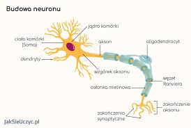
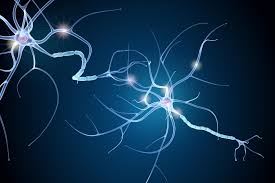
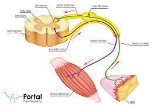
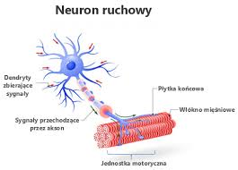
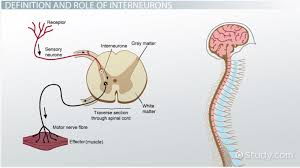

Układ Nerwowy
Neurony tworzą centralny i obwodowy układ nerwowy.

Budowa Neuronu
Neuron składa się z ciała komórkowego (soma), dendrytów oraz aksonu.

Funkcje Neuronów
Neurony przewodzą impulsy nerwowe, przetwarzają informacje i kontrolują funkcje organizmu.

Rodzaje Neuronów
Istnieją neurony czuciowe, ruchowe oraz interneurony.

Neuron Czuciowy

Neuron Ruchowy

Interneurony
